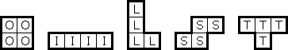
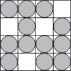
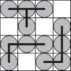

On the Subject of Foaboru
Circle Tetris! Circle Tetris! Circle Tetris!
This module consists of a 8 by 8 grid which contains circles. Foaboru is a logic puzzle which consists of the following rules:
- Connect four circles to create a tetromino.
- Each circle only belongs to one tetromino.
- Empty tiles do not belong to any tetromino.
Using the following rules, solve the puzzle so that the board always has a tetromino. But, there is a catch. Since the module is a bit special, an additional rule was added to it. The rule is:
- A tetromino is not allowed to be adjacent to a tetromino which has the same color as the said tetromino.
By clicking the circle, the circle will change its color. A color that can appear on each circle is White, Gray, or Black.
To submit an answer, click the buttons “PEG”. An animation of the circles flashing should occur. Giving an incorrect answer will cause a strike to occur and the puzzle to reset to a new one.
A Simple Guide for Foaboru
Just in case you didn't understand it properly.
Tetrominos Illustration:
An Example of a Foaboru Puzzle:
Example:

Solution:

Further Guide Websites:
https://www.janko.at/Raetsel/Naoki/Foaboru.htm